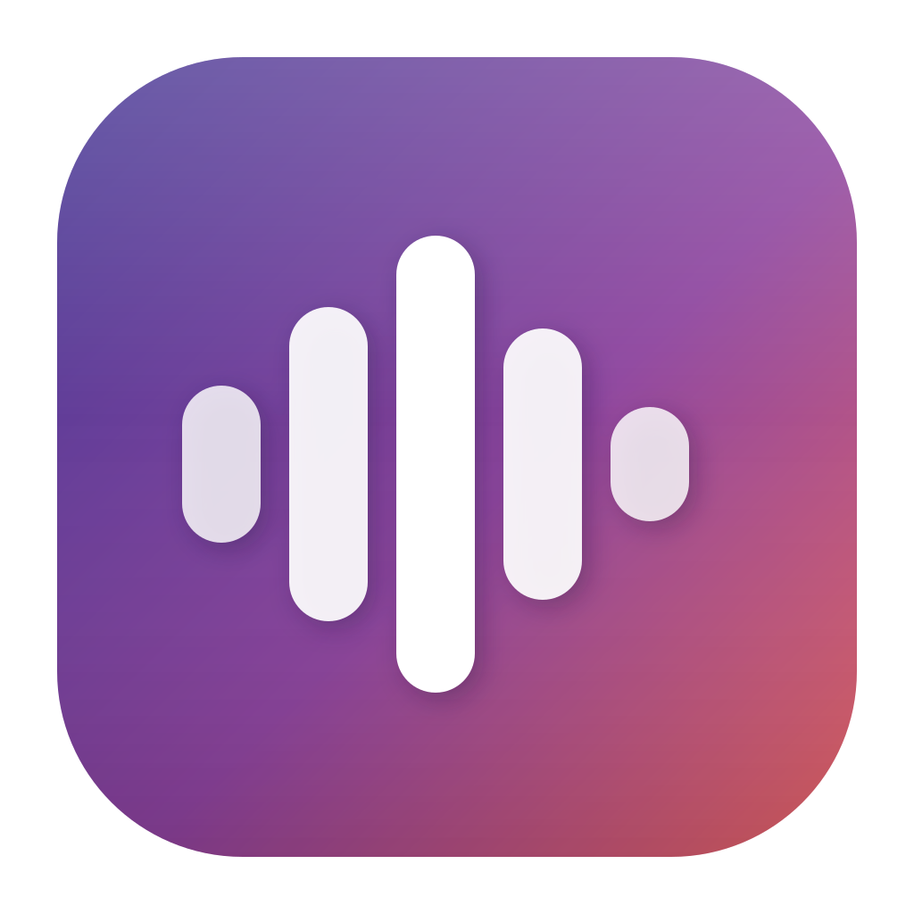

Hold ⌥, speak, release. Cleaned-up text lands in whatever app you were typing in.
macOS 14+ · Apple Silicon · signed & notarised · 10 MB disk image
Release notes ·
Source on GitHub
Wispr Flow costs about $15 a month. superwhisper is about $84 a year. Both send your voice to a server and wait for it to come back.
On Apple Silicon the models are now fast enough to run locally, so that subscription is buying you latency and a privacy problem. Murmur transcribes a short sentence in 0.176 seconds — quicker than the network round trip a cloud service pays before its model has even started.
This is enforced, not promised. The moment the speech models finish loading, Murmur bolts the door: any subsequent network call throws rather than quietly succeeding. A future change that accidentally introduced one would fail loudly instead of leaking your audio.
You can check it yourself — this refuses the network for the entire run and still transcribes:
swift run Murmur selftest test_short.wav --offline
⌥ held → event tap → microphone @ 16kHz
⌥ released → Parakeet TDT v2 on the Neural Engine
→ filler-word cleanup
→ pasted into the frontmost app
Speech recognition runs through CoreML in pure Swift, so the whole app is a 16MB binary with no Python runtime bundled inside it.
Every model was benchmarked on real hardware before anything was built.
| Model | Short clip | Long clip |
|---|---|---|
| whisper large-v3-turbo | — | 3.29s |
| whisper small.en | 0.484s | 0.900s |
| Parakeet (MLX) | 0.296s | 0.628s |
| Parakeet (CoreML) | 0.176s | 0.293s |
A local LLM cleanup pass was tested and rejected. Qwen3-1.7B was quick but silently deleted whole clauses; Qwen3-4B kept everything but took 2.7 seconds. Leaving a stray “um” in is far better than losing something you actually said, so the default pass only removes what it can prove is noise.
git clone https://github.com/justynroberts/murmur cd murmur swift build -c release ./Scripts/bundle.sh release open Murmur.app